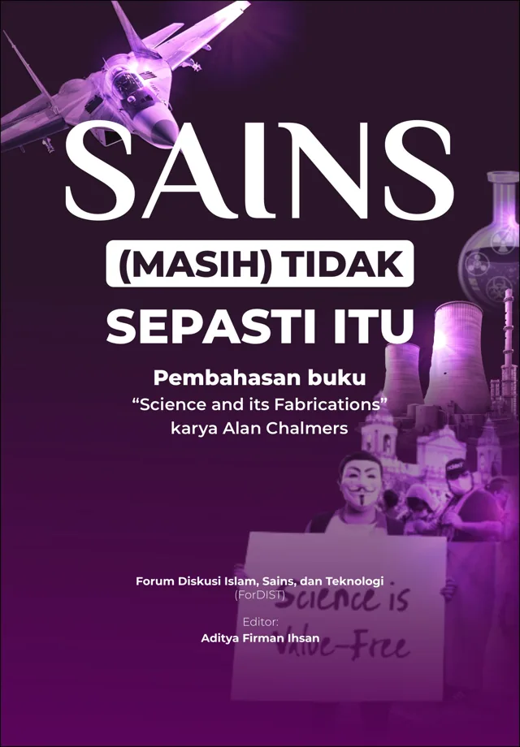
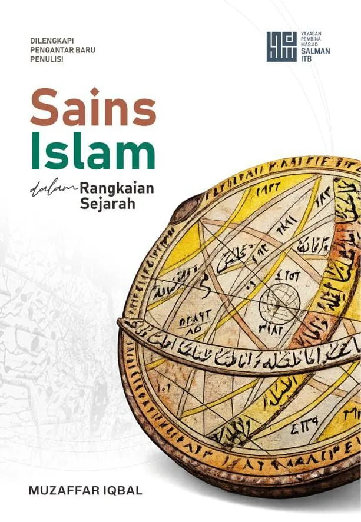
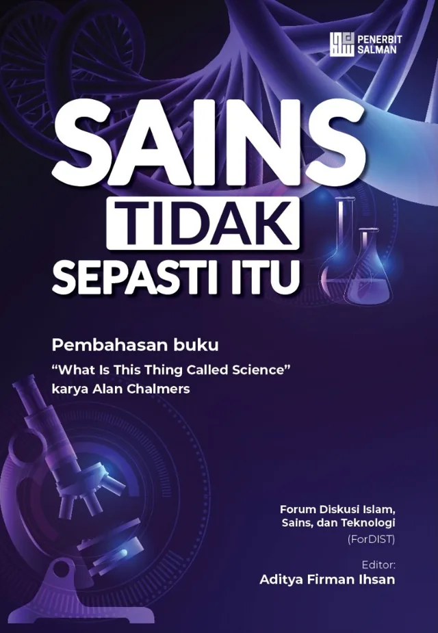

Sains dan teknologi dalam khazanah Islam, dikaji bersama.
ForDIST adalah komunitas kajian dan penerbitan buku. Anggotanya tersebar di banyak tempat, dengan Indonesia sebagai basis.



Islam dan sains-teknologi, dikaji dalam satu worldview.
Sudut pandang worldview Islam, sejarah intelektual, dan rujukan pada sumber primer.
Hakikat pengetahuan ilmiah, metode sains, dan relevansinya bagi teknologi hari ini.
Ruang belajar bagi siapa pun yang ingin memahami Islam dan sains.
Sejarahnya, pemikirannya, dan relevansinya hari ini. Kami belajar lewat kajian, lalu merangkum hasilnya menjadi tulisan dan buku.
Kajian dan daras internal
Pertemuan antaranggota untuk mendalami tema sains dan teknologi Islam.
Kajian dan daras eksternal
Kajian terbuka agar pembahasan komunitas bisa diikuti lebih banyak orang.
Produksi buku
Hasil kajian dan penelitian disusun menjadi buku yang bisa dibaca dan dirujuk.
Buku yang telah kami terbitkan
Bermula dari obrolan malam hari
ForDIST lahir dari kegelisahan sejumlah pemuda Muslim berlatar sains-teknologi. Mereka ingin komunitas yang mengkaji hubungan Islam dan sains-teknologi dari sudut pandang worldview Islam, bukan sekadar justifikasi ilmiah atau retorika semangat. Inisiatornya Taufik Hidayat dan Azrul Kiromil bersama Juris Arrozy dan Hasan Al-Asy'ari, dibimbing Ust. Usep Mohamad Ishaq dan Ust. Wendi Zarman.
Pertemuan perdana berempat para inisiator.
Grup WhatsApp dibuat dengan nama awal "Disc. SainTek & Islam", lalu anggota awal bergabung.
Pertemuan daring perdana lewat Zoom. Sehari kemudian nama grup berganti menjadi "ForDIST".
Pertemuan seluruh anggota bersama kedua pembimbing untuk menetapkan format dan jadwal daras.
Daras perdana buku What Is This Thing Called Science? karya Alan Chalmers via Zoom, menandai dimulainya kegiatan rutin.
Nama ForDIST tumbuh sendiri dari nama-nama grup yang berganti, bukan hasil rencana. Kemiripannya dengan Fordism ala Henry Ford hanya kebetulan yang jadi bahan candaan.
Kajian dan acara yang pernah berlangsung
Siapa kami
Sekumpulan orang dari berbagai latar dan kota yang belajar bersama, dibimbing para asatidz.
Pembimbing
Anggota
Tertarik bergabung?
Di mana pun Anda berada, silakan kirim email singkat berisi nama, domisili, dan minat Anda. Kami akan membalas dengan info jadwal kajian dan cara bergabung.
Kirim email